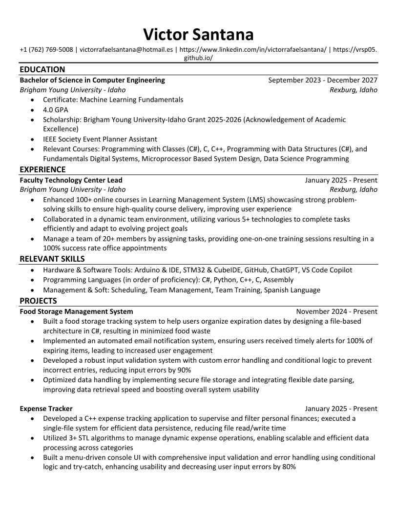
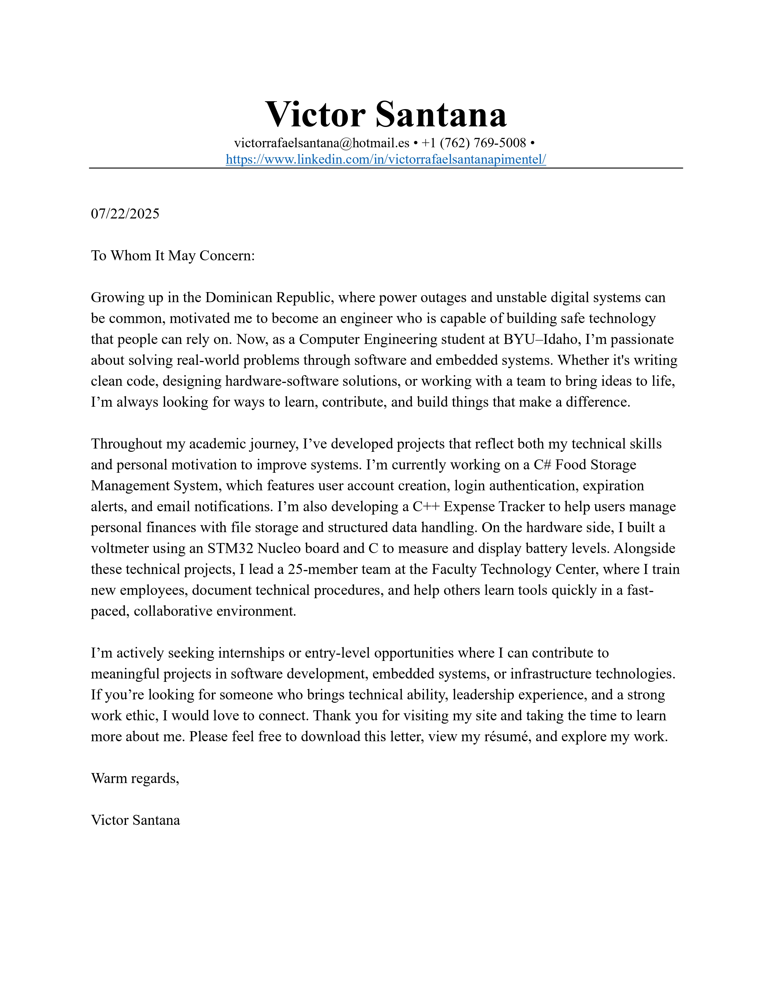

Biography

Hi, I’m Victor Santana — a Computer Engineering student at Brigham Young University–Idaho, originally from Santo Domingo Este in the Dominican Republic. I’m passionate about solving real-world problems through technology, especially in the areas of aerospace, embedded systems, and robotics. I’m driven by a desire to build systems that people can rely on, especially in places like my home country, where stable technology can truly change lives.
I’ve always believed that hard work, respect, and humility open doors. That belief has shaped my journey from helping people as a missionary during the pandemic, to leading a team of over 20 student employees at BYU–I’s Faculty Technology Center. In my role, I’ve helped support over 300 online courses per semester, led training programs, managed custom automation tools, and coordinated with multiple departments. Every day I help people — faculty, students, and my coworkers — and every day I learn something new.
I’m skilled in C#, Python, C, and C++, and I enjoy applying those languages to projects that matter. One of my favorite C++ projects was a terminal-based Expense Tracker that taught me how to structure programs and manage files. In C#, I’m currently building a Food Storage Management System inspired by my LDS faith, which includes account login, data saving, email notifications, and more — all from scratch. These projects reflect my love for both hardware and software, and how they work together to solve real problems.
I’m also bilingual (Spanish and English) and a full-year scholarship recipient. I love working with microcontrollers like STM32 and Arduino, and I’ve gained hands-on experience with circuit design, object-oriented programming, file handling, and debugging. Whether it's through team collaboration, leadership, or learning by doing, I’m always trying to grow both professionally and personally.
Outside of school and work, I’m a husband to my amazing wife Nora, and I dream of one day retiring in the Dominican Republic — where I can live a simple, happy life, give back to my community, and help others rise. Until then, I’m focused on becoming the best engineer and person I can be.
Find Me Online
All Files
Click on a file to view its contents.
My Most Recent Resume
My Most Recent Cover Letter
My Most Recent Unofficial Transcript

Projects
Food Storage Management System
A C# program that tracks food items by expiration date and sends email alerts. Includes user login and file-based storage.
Books I've Read

How Not to Die by Michael Greger M.D. FACLM & Gene Stone
This book taught me how food choices directly affect health and longevity. It changed the way I look at nutrition and eating habits.
View on NutritionFacts.org
Who Moved My Cheese? by Spencer Johnson
A short but powerful book on dealing with change. It helped me learn to adapt quickly and stay positive during uncertain times.
View on Amazon12 Rules for Life by Jordan B. Peterson
A deep and thoughtful book. I appreciated its mix of psychology, life advice, and responsibility. One of the most influential books I’ve read.
View on Amazon